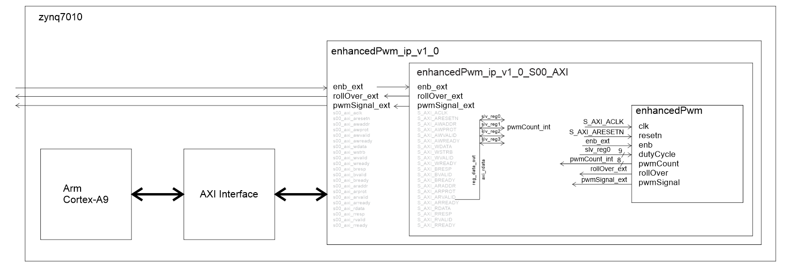

Software control of custom IP hardware
The goal of this lab is to allow you to create a hardware and software system
that can function as a function generator and oscilloscope.
C-level Functionality
This level of functionality will earn a 75% grade. The requirements:
- A function generator that can generate a sine waveform.
- An oscilloscope
- A "hand" drawn schematic of your IP inside the the xyz_ip_v1_0_S00_AXI
file. I need you to understand what signals you are sending outside the
chip and which you are sending to the ARM-A9.

The user should be able to interact with the hardware on a serial interface
running on the ARM-A9. This interface should allow the user to
- Adjust the trigger voltage of the oscilloscope.
- Adjust the frequency of the function generator output.
B-level Functionality
This level of functionality will earn an 85% grade. The requirements are all the
requirements of C-level functionality plus the following.
- A function generator that:
- Can generate two different period waveform, a sine wave and a sinc wave.
- Has a frequency resolution of exactly 1Hz.
- Uses a 64 entry LUT.
- An oscilloscope
- That sends the channel 1 and 2 data to the ARM-A9
- A "hand" drawn schematic of your IP inside the the xyz_ip_v1_0_S00_AXI
file. I need you to understand what signals you are sending outside the
chip and which you are sending to the ARM-A9.
The user should be able to interact with the hardware on a serial interface
running on the ARM-A9. This interface should allow the user to
- Adjust the trigger voltage of the oscilloscope.
- Select which period waveform is output on the function generator.
- Adjust the frequency of the function generator output.
- Display the last 64 values of channel 1 or channel 2. These samples
need to be taken at the sampling rate. This means that you need to send
a status signal to the ARM-A9. Consider incorporating a
flag register
in your acquireToHdmi component.
A-level Functionality
This level of functionality will earn an 95% grade. The requirements are all the requirements
of B-level functionality (where they do not conflict), plus the following.
- A 2-channel function generator that:
- Can generate two different period waveform, a sine wave and a sinc wave.
- Be enabled or disabled. When disabled, the output goes to 0V DC.
- Perform a frequency sweep.
- An oscilloscope that:
- Four different sampling rates
- A "hand" drawn schematic of your IP inside the the xyz_ip_v1_0_S00_AXI
file. I need you to understand what signals you are sending outside the
chip and which you are sending to the ARM-A9.
The user should be able to interact with the hardware on a serial interface
running on the ARM-A9. This interface should allow the user to
- Adjust function generator mode between off, fixed frequency and sweep.
- Adjust the start, end and duration of the frequency sweep.
- Select which periodic waveform is output on the function generator.
- Display the peak-to-peak voltage of the waveform on channel 1 and 2.
- Display the frequency of the waveform on channel 1 and channel 2. You can
assume that the input is sinusoidal for this function.
Bonus
Up to 5% of bonus points will be awarded for incorporating some hardware/software
functionality not covered in the class. For example:
- Incorporate AXI_GPIO to your ARM-A9 and write software that shows
you can read and write GPIO.
- Write an ISR triggered by Core0_nFIQ
- Get creative, surprise me.
Flag register
I've provided some code for an interface mechanism that allows your custom IP
to send status information to your ARM-A9. The reason that you may need this
register is because, often times, the status bits that your IP sends are valid
for a single clock cycle, but the software running on the ARM-A9 may not get
around to checking that status bit for a while. When the ARM-A9 gets around to
checking the status bit, it may be gone.
entity flagRegister is
generic (N: integer := 8);
port( clk: in STD_LOGIC;
resetn : in STD_LOGIC;
set, clear: in std_logic_vector(N-1 downto 0);
Q: out std_logic_vector(N-1 downto 0));
end flagRegister;
The flag register solves this problem using a "sticky" status bit. In other words
your IP status bit connects to the set input of the flag register to set the Q bit
output of the flag regster to logic 1. The Q output of the flag register is sent to
ARM-A9 through one of the SLV_REGx memory mapped registers. Since the Q output is
"sticky" it stays set until cleared. This way the ARM-A9 can take its time to read
the status bit. When the ARM-A9 is done reading the "sticky status bit, it can clear
this bit back to logic 0 by writing the flag register's clear input through one
of the memory mapped SLV_REGy. The cycle is now ready to repeat. And yes, this is
exactly the same process used on the PIC 18F26K22 status register - think the
TMR0IOF bit of the TMR0CON register.